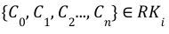
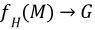
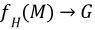

R-K Pipeline
An R-K Pipeline is a unidirectional pipeline that builds an R-K Model from an incoming dataset or data stream as a precursor to generate domain specific R-K Diagrams with appropriate “range-filters” and “leaf-linkers’’. An R-K Pipeline, involves the process of transforming an NxM Tensor with 3 or more independent physical/ontological variables into an R-K Model which can then be visualized as an R-K Diagram with the help of domain specific filter and linker functions.
At a base level, the R-K Pipeline can be understood as a Directed Acyclic Graph (DAG), which provides transformational components that result in a composite model we call an R-K Model. Transforms in an R-K Pipeline can be chained against each other, as long as egress from one component complies with the ingress specifications from another component. We can mathematically represent this with the following representation:  where  represents a pipeline component and the egress of is compliant with a set of constraints imposed by
represents a pipeline component and the egress of is compliant with a set of constraints imposed by  ‘s ingress. There are a few novel concepts and objects within the pipeline as well as the entire pipeline itself, by virtue of its components and ordering, that provide a novel approach toward topological graph theory and data analysis.
‘s ingress. There are a few novel concepts and objects within the pipeline as well as the entire pipeline itself, by virtue of its components and ordering, that provide a novel approach toward topological graph theory and data analysis.
The figure below demonstrates the various steps of an R-K Pipeline w.r.t. the data-flow as shown:

Composed together are the following steps:
Preprocess Steps
Localization Algorithm
Hierarchical Feature Extraction Nodes
Filter Functions
Linkage Functions
Composed together, these independent component modules of the R-K Pipeline can be triggered in sequence to synthesize an R-K Model as a precursor to generating R-K Diagrams.
- class rktoolkit.models.pipeline.RKPipeline(filter_map: dict, linkage_map: dict, structural_graph=None)
Class implementing the R-K Pipeline explained above
- check_valid_node(node) bool
Check if the node is valid or not
- Parameters
node (Any) – Node to be checked
- Returns
Return True if node has value, else False
- Return type
bool
- get_w()
Method to get the vertices and columns (weights) for mapping.
- Returns
Returns both the vertex mapping and columns (weights).
- Return type
tuple[list,list]
- remap(vmap, cols)
Method to Remap the pipeline for the RKModel
- Parameters
vmap (Any) – Vertices Mapping
cols (Any) – Columns for the mapping
- Returns
Returns a remapped R-K Pipeline Class
- Return type
Base Ontology and Hierarchical Transform Graphs
An ontology in the context of an R-K Model, describes the relationship between two or more measures in the form of a hierarchy. Ontological frameworks are domain dependent and have numerous advantages, such that it makes domain assumptions on data explicit and/or to share a common understanding of structural information across metrics.
In an R-K Pipeline the ontologies can either be learned via covariance and correlation associations made automatically using the Correlation HTG module from relational databases which represent physical parameters without any explicit framework for determining dependence and relationships. These domain ontologies can also be inherited in the R-K Pipeline from Ontological databases available online or JSON files which contain a particular defined hierarchy. There are numerous ontological databases available for describing relationships between known domains which can be directly applied to the R-K Pipeline to build corresponding models based on the choice of a particular lens function. The Web Ontology Language (OWL) is a specific set of web standards and language devised to standardize ontologies through OWL Documents which can be applied to the R-K Pipeline.
Classes used to create Base Ontology Transform and Correlated Hierarchical Transform Graphs.
- class rktoolkit.functions.htg_transformers.BaseOntologyTransform(mapping, lens='root', color_decay_rate=0.1)
This Class is used for cases in which an ontology is generated or provided for a particular application. It creates a transform for a given Ontology loaded from a JSON file with input given as a Python object. The JSON file contains hierarchical data. This class transforms the ontology into a Graph using the data from the dataframe of any particular data source or from results of the Hierarchical Transform Graph based on covariance parameters. An empty graph is first created and the rest of vertices and edges are added using a private convert method.
- transform(X)
Transforms the ontology into a Graph using the data from the dataframe of GWTC. An empty graph is created and the rest of vertices and edges are added using a private convert method.
- Parameters
X (Any) – Data to be transformed to graph
- Returns
Graph transform for the given data.
- Return type
- class rktoolkit.functions.htg_transformers.CorrelationHTGGenerator(threshold=0.7)
This Class is used to create a Correlation and covariance based Hierarchical Transform Graph(HTG) using a given data frame for pre determining dependence and interrelationships between various column variables residing in the master-dataset which could consist of columns and dimensions from different data sources/streams representing the same event or entity. Transforms a given graph into a Correlated HTG with built-in covariance parameters which determine interdependence between dependent and independent variables. In this case an empty HTG is created first and then nodes are added to it based on the correlation factor between different dimensions of the master-dataset.
- fit(X, y)
- transform(X)
Transforms a given graph into a Correlated HTG. Empty HTG is created and then nodes are added to it based on the correlation factor.
- Parameters
X (Any) – Input data to be used for creating the transform. Will be converted into a correlated dataframe.
- Returns
A correlated Hierarchical Transform Graph.
- Return type
Hierarchical Embedding Function
In the R-K Pipeline, a Hierarchical Embedding Function generates a graph G from a set of measures M such that the resulting graph G, is a DAG which represents a bijective mapping between  such that all
such that all  can be traced back to the original value in the dataset, where V is a vertex. More succinctly,  such that
can be traced back to the original value in the dataset, where V is a vertex. More succinctly,  such that  . The advantage of this requirement is that any structural graph can be inverted back into original measures used to generate the graph.
. The advantage of this requirement is that any structural graph can be inverted back into original measures used to generate the graph.
Across the pipeline, the graph generated by  is referenced as a Structural Graph (S). The structural graph provides the baseline ontological structure that forms the basis for all other transformations in the pipeline.
is referenced as a Structural Graph (S). The structural graph provides the baseline ontological structure that forms the basis for all other transformations in the pipeline.
Isometric Compressions
Unlike standard dimensionality reduction techniques, compression techniques applied to the R-K Diagrams do not lose resolution in the data and can also maintain a consistent number of dimensions (2 or 3) of diagrams regardless of the number of model dimensions.
This makes it far easier to evaluate models in higher dimensional space qualitatively without data loss and is one of the primary advantages to the R-K Pipeline. We used the steps outlined in Isometric Compressions,Inverse Function, and Decompression for graph compression.
We used a limited compression technique via a 1 degree leaf compression technique, which compressed all 1 degree or “unlinked” leafs into a single compressed leaf branching from the same parent. The steps are maintained internally so that the original structural graph can be reconstructed from the compressed version, thereby providing the inverse transformation.
TODO: Need to add from the notebook after talking with andorsk